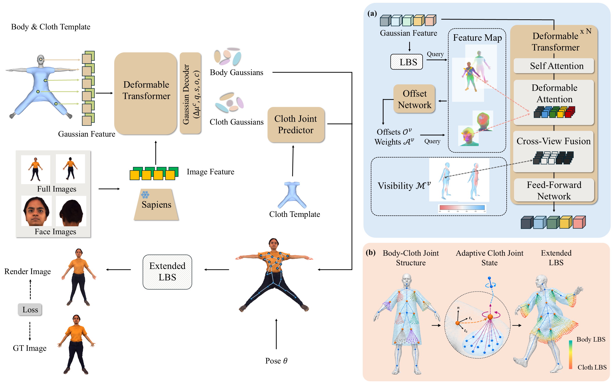

We propose FACt, a feed-forward framework combining 3D Gaussian Splatting with deformable attention and extended LBS to achieve high-fidelity, animatable human reconstruction and clothing deformation in a single forward pass. Our method integrates deformable feature fusion from sparse-view images and a cloth joint-driven kinematic chain.
Overview
We present FACt, a novel feed-forward framework for animatable clothed human reconstruction from sparse-view images. Unlike optimization-based methods requiring per-subject refinement or feed-forward approaches limited to static capture, FACt leverages 3D Gaussian Splatting to enable high-fidelity avatar reconstruction and adaptive clothing deformation in a single forward pass. Our model's architecture efficiently fuses 3D representation with locally aligned image features via a deformable transformer, effectively preserving geometric and appearance fidelity in the canonical space. To accurately model dynamic clothing, we introduce an adaptive cloth joint learning strategy. This strategy extends the standard Linear Blend Skinning kinematic chain beyond the SMPL-X template, enabling realistic motion control across diverse clothing styles and poses. Experiments on real-world datasets demonstrate that FACt produces realistic and animatable human avatars across novel views and poses, outperforming state-of-the-art methods.
Method

Sparse-view inputs initialize body and cloth Gaussians from SMPL-X and cloth templates. Full and face image features are extracted by Sapiens and fused with Gaussian features to predict canonical Gaussian primitives. Pose-conditioned cloth-joint states are then predicted and combined with body joints in an extended LBS to model garment dynamics. (a) Deformable transformer: an offset network samples locally aligned image features, while SMPL depth-based visibility preserves cross-view consistency for feature fusion. (b) Adaptive cloth joint learning: anchors initialized from the canonical SMPL-X mesh define support regions for cloth Gaussians; cross-attention aggregates features in each region, and MLP heads predict joint offsets and rotations relative to parent body joints. Extended LBS combines body- and cloth-joint influences, allowing Gaussians farther from the body to depend more on cloth joints.
Performance
THuman Reconstruction
Four subjects are shown per page. Use the arrows to browse the remaining samples.
4D-DRESS Animation
Each page presents one outfit: ground truth, canonical view, and four rendered views.
Novel Pose Synthesis
The driving SMPL-X motion is at left. The five-column, two-row grid keeps the target identities in a fixed order for every outfit.
Citation
@article{chen2026fact,
title = {FACt: Feed-forward Animatable Clothed Human Reconstruction},
author = {Chen, Zeyu and Zhang, Kaiyan and Cao, Yukang and Li, Yang and Ji, Pan and Liu, Pei and Han, Kai},
journal = {arXiv preprint},
year = {2026}
}